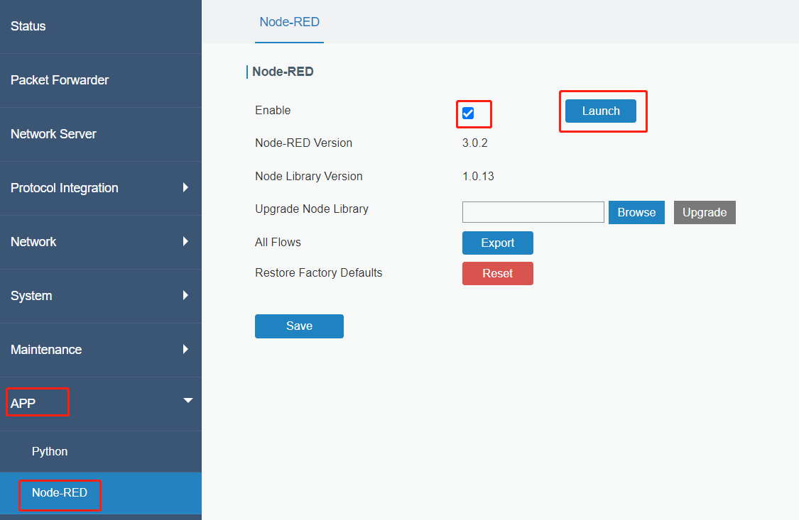
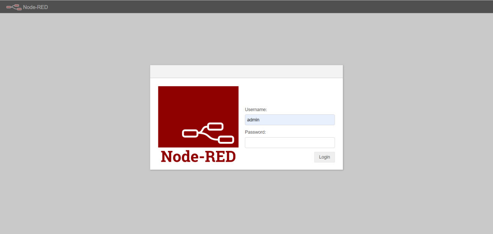
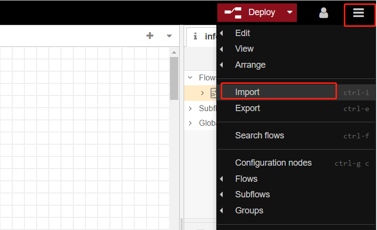
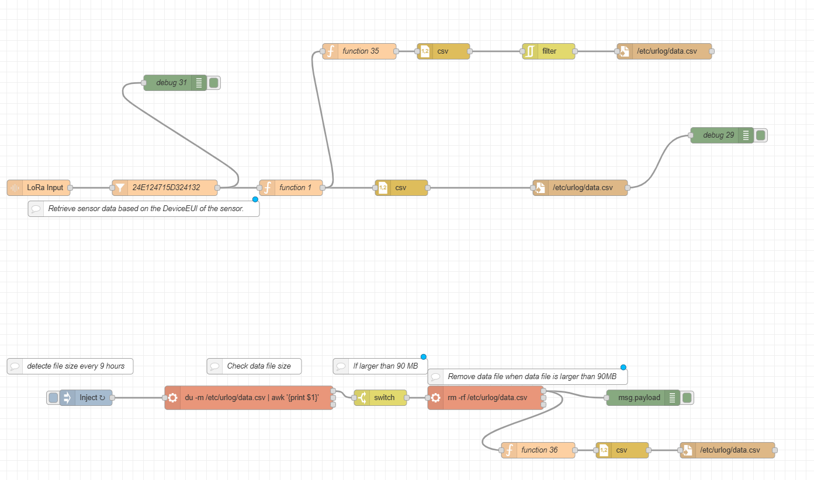
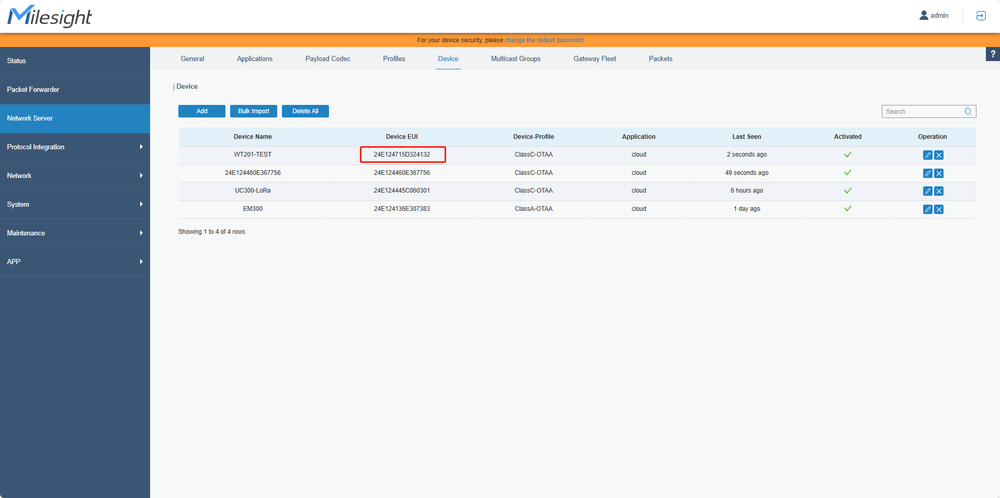
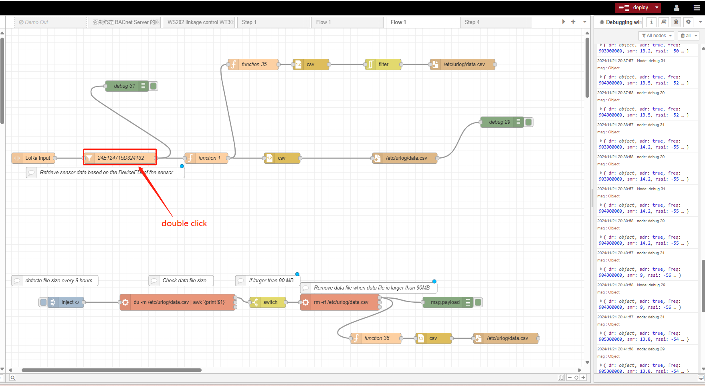
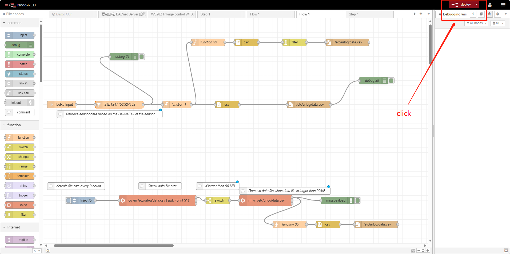
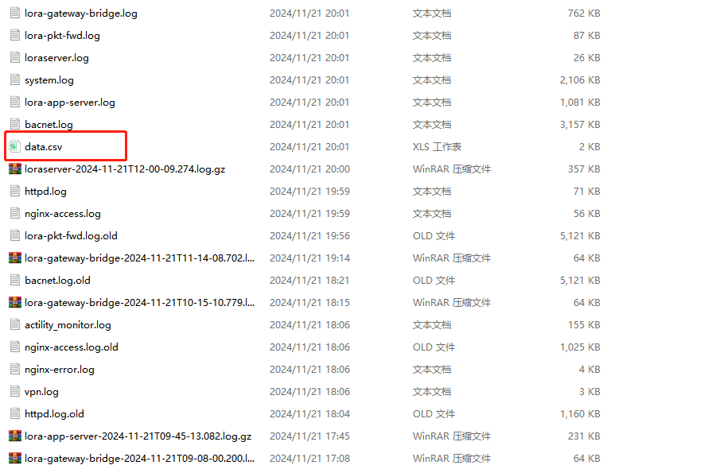
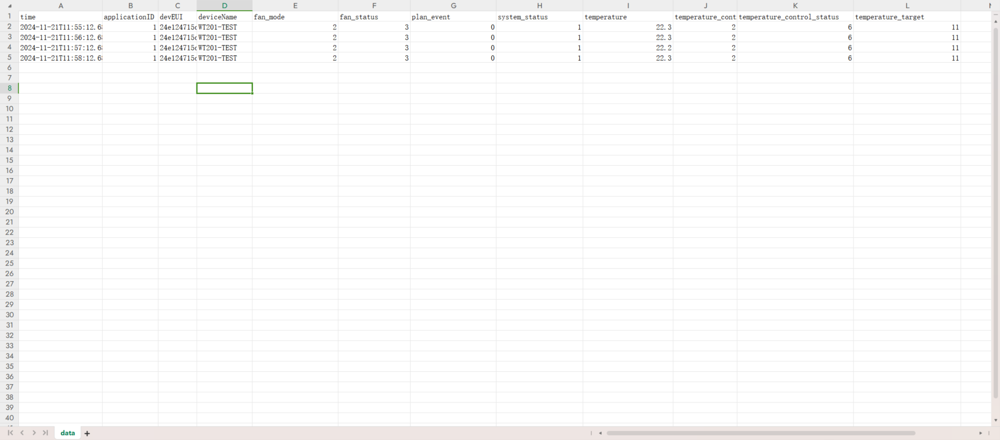

How to Store and Download Sensor Data on a Milesight Gateway Using Node-Red
| Version | Update Time | Description | Author |
| 1.0 | Nov. 21, 2024 | Initial version | Charles |
Description
The Milesight gateway supports Node-Red functionality, which allows you to easily store the data from sensors added to the built-in NS of the Milesight gateway on its internal disk and download it.
Requirement
Milesight Gateway: UG56/UG65/UG67
Milesight sensor(This article will use the Milesight WT201 as an example)
Configuration
Step 1: Launch Node-RED and Import Flow Example
Go to App > Node-RED page to enable Node-RED program and wait for a while to load the program, click Launch button to start Node-RED web GUI.

Log in the Node-RED web GUI. The account information is the same as gateway web GUI.

Click Import to import the node-red flow example by pasting the content or import the json format file.


Step 2: Node-RED Configuration
Flow structure:

Content:
| [{"id":"109bd359.450d09","type":"tab","label":"Flow 1","disabled":false,"info":""},{"id":"d91b718cb14b9349","type":"LoRa Input","z":"109bd359.450d09","name":"","devEUI":"","extendedField":"","x":140,"y":360,"wires":[["f511eca73c089a42"]]},{"id":"f511eca73c089a42","type":"Device Filter","z":"109bd359.450d09","name":"24E124715D324132","eui":"24E124715D324132","x":380,"y":360,"wires":[["5cb90deed87c562a","eb666db2053f0f5b"]]},{"id":"5cb90deed87c562a","type":"function","z":"109bd359.450d09","name":"function 1","func":"var t = msg.time;/nvar tm = {/"time/": t};/nvar raw_obj = msg.object;/nvar new_obj = {...tm,...raw_obj};/nmsg.payload = new_obj;/nreturn msg;","outputs":1,"noerr":0,"initialize":"","finalize":"","libs":[],"x":620,"y":360,"wires":[["85b922c5f37b459d","2f8167e11861aa85"]]},{"id":"283a0d934dc6e42f","type":"file","z":"109bd359.450d09","name":"","filename":"/etc/urlog/data.csv","filenameType":"str","appendNewline":false,"createDir":true,"overwriteFile":"false","encoding":"none","x":1170,"y":360,"wires":[["180f8453a7de4fe4"]]},{"id":"180f8453a7de4fe4","type":"debug","z":"109bd359.450d09","name":"debug 29","active":true,"tosidebar":true,"console":false,"tostatus":false,"complete":"true","targetType":"full","statusVal":"","statusType":"auto","x":1440,"y":260,"wires":[]},{"id":"85b922c5f37b459d","type":"csv","z":"109bd359.450d09","name":"","sep":",","hdrin":"","hdrout":"none","multi":"one","ret":"//n","temp":"","skip":"0","strings":true,"include_empty_strings":"","include_null_values":"","x":830,"y":360,"wires":[["283a0d934dc6e42f"]]},{"id":"2f8167e11861aa85","type":"function","z":"109bd359.450d09","name":"function 35","func":"var x =Object.keys(msg.payload);/nmsg.title = global.set(/"title/", x);/nmsg.payload = x;/nreturn msg;","outputs":1,"noerr":0,"initialize":"","finalize":"","libs":[],"x":750,"y":100,"wires":[["973928e5edd03293"]]},{"id":"f32ad02a8fa1e0d1","type":"file","z":"109bd359.450d09","name":"","filename":"/etc/urlog/data.csv","filenameType":"str","appendNewline":false,"createDir":true,"overwriteFile":"false","encoding":"none","x":1330,"y":100,"wires":[[]]},{"id":"973928e5edd03293","type":"csv","z":"109bd359.450d09","name":"","sep":",","hdrin":"","hdrout":"none","multi":"one","ret":"//n","temp":"","skip":"0","strings":true,"include_empty_strings":"","include_null_values":"","x":910,"y":100,"wires":[["b948a2e00f31a6b8"]]},{"id":"b948a2e00f31a6b8","type":"rbe","z":"109bd359.450d09","name":"","func":"rbe","gap":"","start":"","inout":"out","septopics":false,"property":"payload","topi":"topic","x":1110,"y":100,"wires":[["f32ad02a8fa1e0d1"]]},{"id":"2a3d86a7af4c0774","type":"inject","z":"109bd359.450d09","name":"","props":[],"repeat":"32400","crontab":"","once":true,"onceDelay":0.1,"topic":"","x":230,"y":760,"wires":[["db0fcfa8e43f1d86"]]},{"id":"db0fcfa8e43f1d86","type":"exec","z":"109bd359.450d09","command":"du -m /etc/urlog/data.csv | awk '{print $1}'","addpay":false,"append":"","useSpawn":"false","timer":"","winHide":false,"oldrc":false,"name":"","x":540,"y":760,"wires":[["103ae61106ceb33e"],[],[]]},{"id":"544b144386121fa7","type":"exec","z":"109bd359.450d09","command":"rm -rf /etc/urlog/data.csv","addpay":false,"append":"","useSpawn":"false","timer":"","winHide":false,"oldrc":false,"name":"","x":990,"y":760,"wires":[["fa90dc7abcac3db8","3018af0cab3ba422"],[],[]]},{"id":"103ae61106ceb33e","type":"switch","z":"109bd359.450d09","name":"","property":"payload","propertyType":"msg","rules":[{"t":"gte","v":"90","vt":"num"}],"checkall":"true","repair":false,"outputs":1,"x":790,"y":760,"wires":[["544b144386121fa7"]]},{"id":"d0a0abedb136e715","type":"comment","z":"109bd359.450d09","name":"Check data file size","info":"Check data file size","x":550,"y":700,"wires":[]},{"id":"0ffd161657346be7","type":"comment","z":"109bd359.450d09","name":"If larger than 90 MB","info":"","x":790,"y":700,"wires":[]},{"id":"5e1c058cca87fae1","type":"comment","z":"109bd359.450d09","name":"Remove data file when data file is larger than 90MB","info":"","x":1070,"y":720,"wires":[]},{"id":"fa90dc7abcac3db8","type":"debug","z":"109bd359.450d09","name":"","active":true,"tosidebar":true,"console":false,"tostatus":false,"complete":"payload","targetType":"msg","statusVal":"","statusType":"auto","x":1290,"y":760,"wires":[]},{"id":"bbd3339e03238072","type":"comment","z":"109bd359.450d09","name":"detecte file size every 9 hours","info":"","x":200,"y":700,"wires":[]},{"id":"3018af0cab3ba422","type":"function","z":"109bd359.450d09","name":"function 36","func":"var new_title = global.get(/"title/");/nmsg.payload = new_title;/nreturn msg;","outputs":1,"noerr":0,"initialize":"","finalize":"","libs":[],"x":1090,"y":860,"wires":[["a95adcd0d251b88c"]]},{"id":"a95adcd0d251b88c","type":"csv","z":"109bd359.450d09","name":"","sep":",","hdrin":"","hdrout":"none","multi":"one","ret":"//n","temp":"","skip":"0","strings":true,"include_empty_strings":"","include_null_values":"","x":1250,"y":860,"wires":[["a113d4f3e05f15c9"]]},{"id":"a113d4f3e05f15c9","type":"file","z":"109bd359.450d09","name":"","filename":"/etc/urlog/data.csv","filenameType":"str","appendNewline":false,"createDir":true,"overwriteFile":"false","encoding":"none","x":1450,"y":860,"wires":[[]]},{"id":"eb666db2053f0f5b","type":"debug","z":"109bd359.450d09","name":"debug 31","active":true,"tosidebar":true,"console":false,"tostatus":false,"complete":"true","targetType":"full","statusVal":"","statusType":"auto","x":400,"y":160,"wires":[]},{"id":"bd93a89f474b7672","type":"comment","z":"109bd359.450d09","name":"Retrieve sensor data based on the DeviceEUI of the sensor.","info":"","x":340,"y":400,"wires":[]}] |
Download link of this flow:
https://resource.milesight-iot.com/Support/Charles/flows%20(STORAGE).json
Step 3:
Please refer to this link(https://support.milesight-iot.com/support/solutions/articles/73000514280-how-to-connect-lorawan-nodes-to-milesight-gateway) to add the sensor to the built-in NS of the Milesight gateway.
In this article, I successfully added the Milesight WT201 with DeviceEUI 24E124715D324132 to the built-in NS of the Milesight gateway, as shown in the figure below.

Please double-click this Filter node, and then enter the DeviceEUI of the sensor data you want to retrieve in this Filter node. In this article, I have entered the DeviceEUI of this WT201.

After entering the correct DeviceEUI, please click the Deploy button to complete the deployment. Subsequently, the sensor data reported by this WT201 will be stored on the disk of the Milesight gateway.

Step 4:
When you want to download the data from this sensor, please click the log download button on the Milesight gateway. After downloading and extracting the logs, you will find a CSV file named data.csv, which contains the latest data uploaded by your sensor. Please note that due to the limited disk space of the Milesight gateway, the data.csv file will be automatically deleted when its size reaches 90MB.


-------END-----